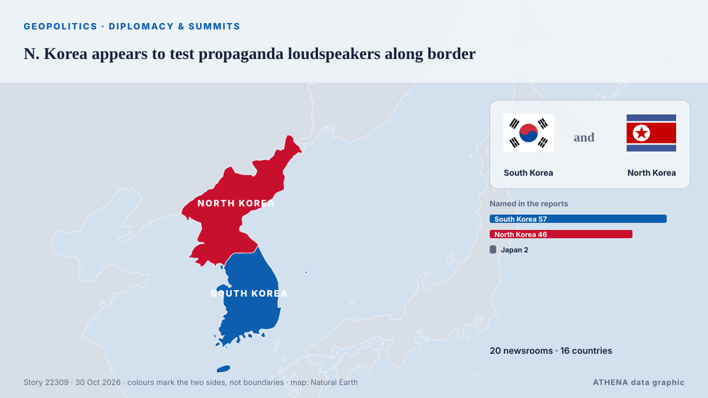

N. Korea appears to test propaganda loudspeakers along border

SEOUL, Oct. 29 (Yonhap) -- North Korea appears to have conducted a test broadcas... από Yonhap (English)
Αναφέρθηκε ανεξάρτητα από 20 μέσα σε 16 χώρες από τις 23 Οκτ, πρώτο από το Yonhap (English)· η κάλυψη εξασθενεί. Το ATHENA εκτιμά τον κίνδυνο μέτριο (3.3/10), κυρίως λόγω της σοβαρότητας της βλάβης που περιγράφεται και της γεωγραφικής και τομεακής εμβέλειάς του. Η βεβαιότητα είναι 89% (υψηλή), καθώς το επιβεβαιώνουν 20 ανεξάρτητα μέσα με μέση αξιοπιστία πηγών 77%.
Γιατί έχει σημασία: Οι εξελίξεις στην ασφάλεια και τη διπλωματία μπορούν να μετατοπίσουν συμμαχίες, εμπόριο και αγορές πολύ πέρα από τις χώρες που εμπλέκονται.
Τι άλλαξε: 7 νέες αναφορές από 5 μέσα στο 24ωρο έως 30 Οκτ.
Πρώτη διατύπωση: South Korea proposes border talks with North
Οι τίτλοι των ειδήσεων παρουσιάζονται στα αγγλικά, όπως δημοσιεύτηκαν.
Με μια ματιά
Επιλέγεται, βαθμολογείται και γράφεται από τη δημοσιευμένη μεθοδολογία του ATHENA. Κανένας συντάκτης δεν παρεμβαίνει σε μεμονωμένα γεγονότα. Πώς παράγεται ›
| 23 Oct 05:32 UTC | 19 |
|---|---|
| 23 Oct 11:32 UTC | 1 |
| 23 Oct 17:32 UTC | 0 |
| 23 Oct 23:32 UTC | 0 |
| 24 Oct 05:32 UTC | 0 |
| 24 Oct 11:32 UTC | 0 |
| 24 Oct 17:32 UTC | 0 |
| 24 Oct 23:32 UTC | 0 |
| 25 Oct 05:32 UTC | 0 |
| 25 Oct 11:32 UTC | 0 |
| 25 Oct 17:32 UTC | 0 |
| 25 Oct 23:32 UTC | 0 |
| 26 Oct 05:32 UTC | 2 |
| 26 Oct 11:32 UTC | 0 |
| 26 Oct 17:32 UTC | 0 |
| 26 Oct 23:32 UTC | 0 |
| 27 Oct 05:32 UTC | 0 |
| 27 Oct 11:32 UTC | 0 |
| 27 Oct 17:32 UTC | 1 |
| 27 Oct 23:32 UTC | 0 |
| 28 Oct 05:32 UTC | 0 |
| 28 Oct 11:32 UTC | 0 |
| 28 Oct 17:32 UTC | 0 |
| 28 Oct 23:32 UTC | 1 |
| 29 Oct 05:32 UTC | 5 |
| 29 Oct 11:32 UTC | 1 |
| 29 Oct 17:32 UTC | 0 |
| 29 Oct 23:32 UTC | 1 |
| 23 Oct 06:41 UTC | 3.9 |
|---|---|
| 23 Oct 16:40 UTC | 3.6 |
| 30 Oct 04:16 UTC | 3.3 |
Γιατί αυτοί οι αριθμοί
Σημασία
Κίνδυνος
Βεβαιότητα
Η κάλυψη — ποιος το ανέφερε και πότε
ο τίτλος όπως δημοσιεύτηκε · ανοίγει το πρωτότυπο- Yonhap (English) · Νότια Κορέα · South KoreaS. Korea proposes military talks with N. Korea to resolve border line issue
- Business Recorder · Πακιστάν · PakistanSouth Korea proposes talks with North Korea on land border
- Asharq Al-Awsat (English) · Σαουδική Αραβία · Saudi ArabiaSouth Korea Proposes Talks with North Korea on Land Border Again
- CNA (Channel NewsAsia) · Σιγκαπούρη · SingaporeSouth Korea proposes holding border talks with North
- The Korea Times · Νότια Κορέα · South KoreaS. Korea proposes military talks with N. Korea over border conflict issue
- The Korea Times · Νότια Κορέα · South KoreaN. Korea likely planted 960,000 land mines along inter-Korean border since 2024: lawmakers
- Arab News · Σαουδική Αραβία · Saudi ArabiaSouth Korea proposes holding border talks with North
- Korea Herald · Νότια Κορέα · South KoreaSeoul proposes military talks with Pyongyang as border tensions rise
- Yonhap (English) · Νότια Κορέα · South Korea(LEAD) S. Korea proposes military talks with N. Korea to resolve border location issue
- ABC News (International) · Ηνωμένες Πολιτείες · United StatesSouth Korea proposes military talks with North Korea to calm rising border tensions
- Yonhap (English) · Νότια Κορέα · South Korea(2nd LD) S. Korea proposes military talks with N. Korea to ease tensions along border
- Bangkok Post — page reader · Ταϊλάνδη · ThailandSouth Korea proposes border talks with North
- DW English · Γερμανία · GermanySouth Korea proposes military talks with North again
- NK News · Βόρεια Κορέα · North KoreaSeoul again proposes talks with North Korea on border lines amid rising tensions
- Yonhap (English) · Νότια Κορέα · South KoreaKey developments on North Korea this week
- Xinhua (English) — page reader · Κίνα · ChinaS. Korea proposes military talks with DPRK over border line issue
- Anadolu Agency (English) · Τουρκία · TurkeySeoul offers military talks to Pyongyang amid tensions on Korean Peninsula
- Korea Herald · Νότια Κορέα · South KoreaS. Korea proposes military talks with N. Korea to ease tensions along border
- Al Jazeera English · Κατάρ · QatarSouth Korea invites North for military talks over border
- Taipei Times · Ταϊβάν · TaiwanSeoul proposes border talks with North
- NEWS.am (English) · Αρμενία · ArmeniaNorth Korea warns of right to self-defense in case of border violation by South
- News of Bahrain · Μπαχρέιν · BahrainSouth Korea Says Pyongyang’s UN Letter Seeks to Justify Border Fortifications
- The New York Times (World) · Ηνωμένες Πολιτείες · United StatesTensions Between North and South Korea Stem From Decade-Old Border Dispute
- NK News · Βόρεια Κορέα · North KoreaNorth Korea fires salvo of around 10 ballistic missiles toward sea: Seoul
- Yonhap (English) · Νότια Κορέα · South KoreaN. Korea appears to test propaganda loudspeakers along border
- The Korea Times · Νότια Κορέα · South KoreaN. Korea appears to test propaganda loudspeakers along border
- NK News · Βόρεια Κορέα · North KoreaBorder city casts doubt on reports North Korea testing loudspeakers
- Yonhap (English) · Νότια Κορέα · South Korea(LEAD) N. Korea appears to test propaganda loudspeakers along border
- Yonhap (English) · Νότια Κορέα · South Korea(2nd LD) N. Korea appears to test propaganda loudspeakers along border
- The Diplomat · Ιαπωνία · JapanAs North Korea’s Loudspeaker Broadcasts Loom, South Korea Has No Good Options
- Free Malaysia Today · Μαλαισία · MalaysiaSouth Korea to respond firmly to North Korean breaches of border, says security aide